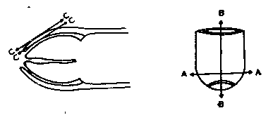
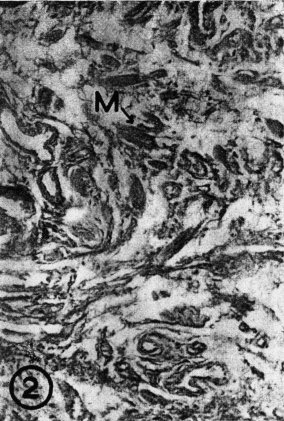
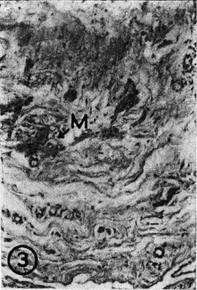
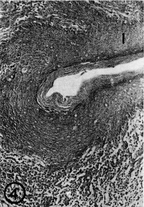

THE CIRCUMCISION REFERENCE LIBRARY
S. Lakshmanan*
S. Prakash** [Printer's error: The
author's name is actually Parkash]
(From the Jawaharlal Institute of Post-Graduate Medical Education and Research, Pondicherry-605 006).
The prepuce, a cowl like fold of the skin, covering the glans penis, has received scant attention from the anatomists or surgeons. Most of the male infants (96%) are born with a non-retractile prepuce but it becomes retractile subsequently, in most of the children, by the age of three, unless prevented by epithelial debris. (Gairdner, 1949). In spite of the remarkable changes to which the glans penis is subjected to regarding its size and shape, and the prepuce being retracted frequently as the result of erection or manually, the prepuce covers the glans completely and snugly like a hosiered material and continues to do so through the entire span of life of the male. The glans is bared of the prepuce spontaneously in erection and the latter is held obliquely against the engorged corona glandis, with the frenulum acting as a hitch or a check rein. This structure has been ritually sacrificed by some communities while the ancient ROMANS went to the extent of infibulation - locking or muzzling of the prepuce (Rogers, 1973). The surgeons have diametrically opposite views about its conservation. Carcinoma is known to be completely prevented by an early circumcision but in view of its other advantages, its conservation by a plastic procedure has been recommended by others (Zaveleta, 1966; Parkash, 1972; Emmett, 1975). [CIRP Note: Penile carcinoma in circumcised men has been reported by several researchers. The risk factors for penile carcinoma are now known to be the presence of the HPV virus, and tobacco use.] The secretory function associated with this structure is a myth. (Parkash et al, 1973) The morphometric study of tissue components has been reported by Elias and Pauly (1966) and this knowledge has not been fully utilised in histo-pathological studies.
The present study was undertaken to find an explanation as to what makes the prepuce fit the glans so closely and the qualitative and quantitative changes in its structure in relation to age.
Postmortem specimens of normal prepuce collected from five neonates, five children under seven years of age and five adults were studied. Each piece was cut into smaller pieces of less than one square centimeter in size and not less than five random pieces per specimen from the adults and all the pieces from the younger subjects were processed and sectioned in different planes (Fig. 1). The sections were studied after staining with Haematoxylin and Eosin, Van-Geison's trichrome, Orcein, P.A.S. and Toludine Blue. By point count method, using an eyepiece line grid, following the morphometric principles (Elias & Pauly, 1966) the volumes of outer epidermis, inner epidermis, free muscle fibres, elastic fibres and blood vessels were computed and the observations were analysed statistically.
Free bundles of smooth muscle fibres arranged in a whorled pattern were observed in all the specimens (Figs. 2 & 3). Statistically significant increased volumes of smooth muscle fibres in the younger group and elastic fibres in the older group were noted (Fig. 5 and Table 1). The volume of outer epidermis was less in all the groups and this difference was significantly more in the adult specimens (Figs. 4 & 5). No secretory tissue or glands were found in any specimen. The epidermis of the prepuce beyond the glans was of the same thickness on both aspects.
|  |
| Fig. 1. Schematic explanation of
the planes of section of prepuce in the present
study (A–A: Transverse; B–B: Longitudinal; C–C: Outer to inner). |
|  |
| Fig. 2. Transverse section through neonatal prepuce showing the free bundles of muscle fibres - Van Giesen's trichrome X 400 (M = Muscle fibre). |
|  |
| Fig. 3. Longitudinal section though adult prepuce showing the free bundles of muscle fibres - Van Giesen's trichrome X 400 (M = Muscle fibre). |
|  |
| Fig. 4. Transverse section through inner epidermis of adult - Haemotoxylin and Eosin X 400 (I = Inner epidermis). |
| Fig. 5 Transverse section through adult prepuce showing the outer epidermis and elastic fibres - Orcein staining X 400 (O = Outer epidermis E = Elastic fibres). |
The presence of smooth muscle fibres in the prepuce has been reported in most of the text books of histology. However the mosaic pattern of arrangement of this tissue, its abundance in the younger individuals and an increase in the elastic fibres in adults appears to be a significant observation. The normal tone of the muscle arranged in this fashion and supplemented by elastic tissue offers a legitimate explanation for the close fit of the prepuce through the ages. The inner lining of the prepuce is thicker and firmer, which again is in accordance with its function, since it impinges against the corona, during erection and coitus. The outer layer of the prepuce in common with the skin of the shaft of the penis glides freely in a to and fro fashion and has to be delicate and thin, as was observed in this study. The tight frenulum helps to retain the obliquely placed loop of retracted prepuce in position. The inner lining of the projecting tubular part has the structure of the outer layer and adds to the thin gliding skin when retracted.
The skin and muscular tissue are held together elsewhere also but the skin is tethered to the underlying fascia which encloses the deeper tissue. This is not likely to be applicable here since the fold is free from the underlying glans and the requirement of retraction is very peculiar to this part.
A study was made to explain the interesting feature of the prepuce snugly covering the glans through all the ages of man, although apparently, it looks just like a double fold of the skin, projecting a little beyond the glans as a fluted and corrugated tube. This can be explained by the presence of a mosaic of muscle tissue and the elastic fibres contained between the two layers. The epidermis of the inner layer till the level of the apex of the glans is thicker while that of the tubular part beyond it as well as the outer layer is remarkably thin and delicate like the skin on the rest of the penis.
TABLE I
Quantitative study of tissue components of the prepuce
Volume per Cubic m. m.
Tissue Component Adult Newborn and P
up to 7 years
Free muscle fibres 0.09 0.15 <0.001
+ or - 0.01 + or - 0.02
Elastic fibres 0.12 0.07 <0.001
+ or - 0.01 + or - 0.02
|
http://www.cirp.org/library/anatomy/lakshmanan/